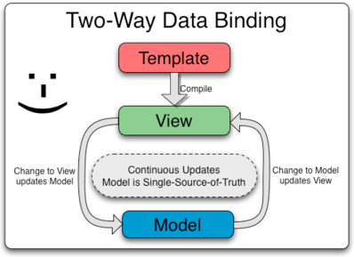
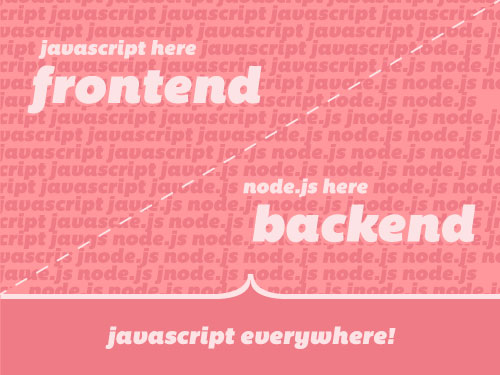
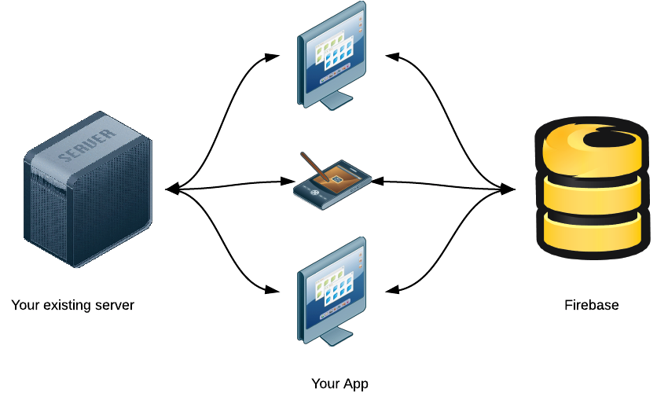
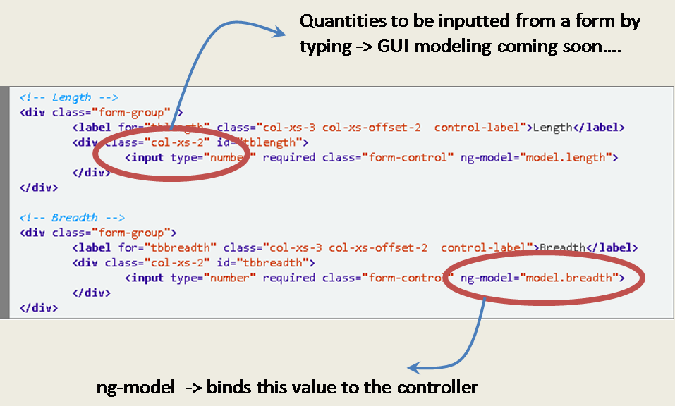
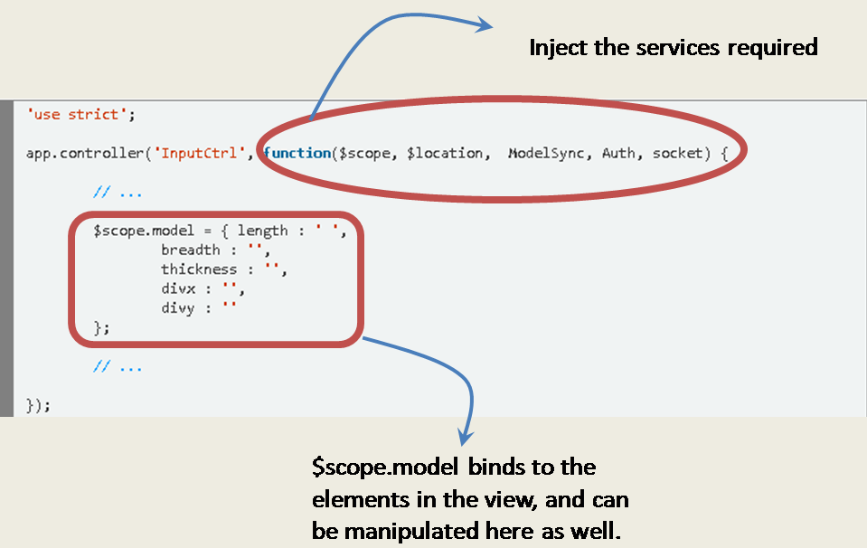
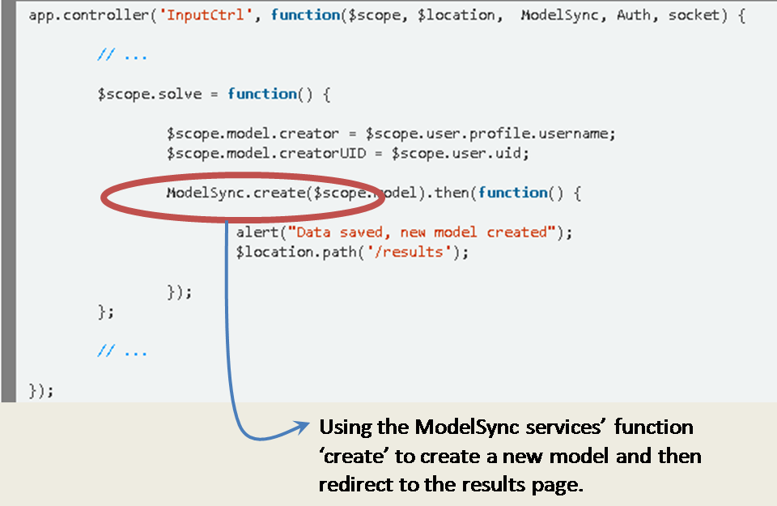
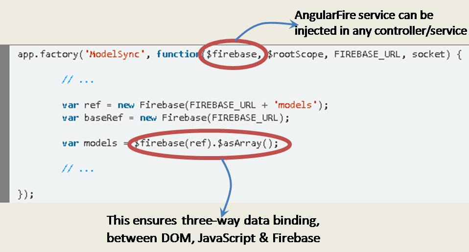
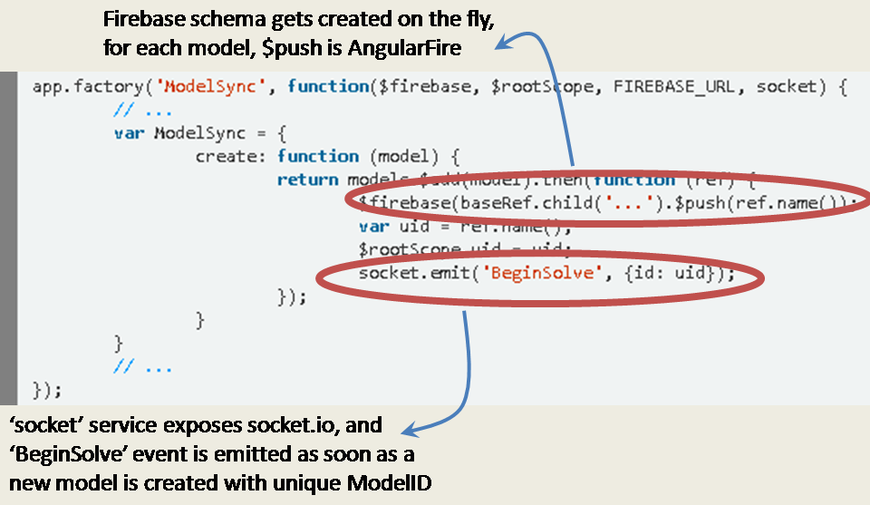
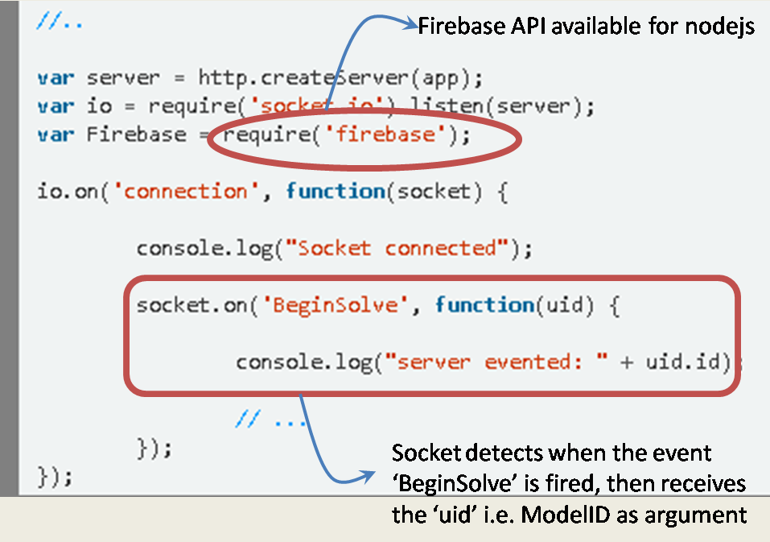

FiNEXT
Finite Element Analysis from the browser
Press the arrow keys to go through an explanation of the architecture.
Why another FEA solution ?
It works from the browser
- Works on all devices -> PCs, laptops, tabs, even mobiles
- Works on all platforms -> Windows, Linux, iOS, Android, ...
- Works anywhere, no need to install anything, just need network
Tech Stack
AngularJS
Socket.io /+ Firebase
NodeJS
Front-end
Single Page Application (SPA)
using AngularJS
which provides MVC architecture

Front-end
Single Page Application (SPA)
using AngularJS
which provides 2-way data binding
Front-end
Single Page Application (SPA)
using AngularJS
which provides re-usable components
.... and a testable javascript framework
Back-End
Asynchronous Javascript
using NodeJS
....server side javascript framework built on google's v8 engine
Therefore, only need one language for back-end and front-end
Communication
Websockets
using Socket.IO
A wrapper library over the Websockets API
... provides automatic down-grade to other methods like xhr-polling

Database
Firebase
Real-time API for storing data to the cloud
...based on NoSQL -> No-schema, just plain JSON everywhere
... awesome documentation and free hacker plan
FiNEXT - Application Architecture

Code Snippets - Modeling
View
Code Snippets - Modeling
Controller
Code Snippets - Modeling
Controller
Code Snippets - Modeling
Services
Code Snippets - Modeling
Services
Code Snippets - Solving
Server
Code Snippets - Solving
Server